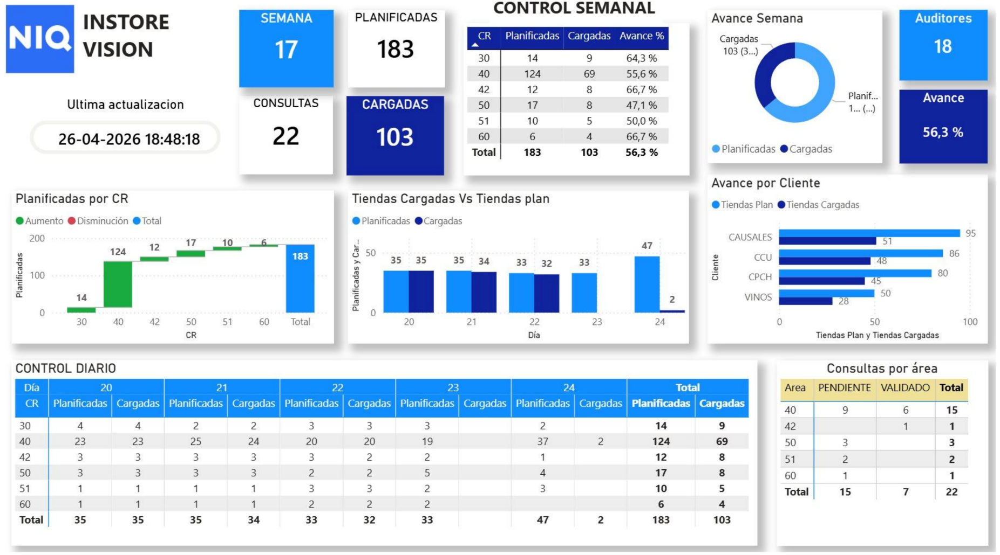
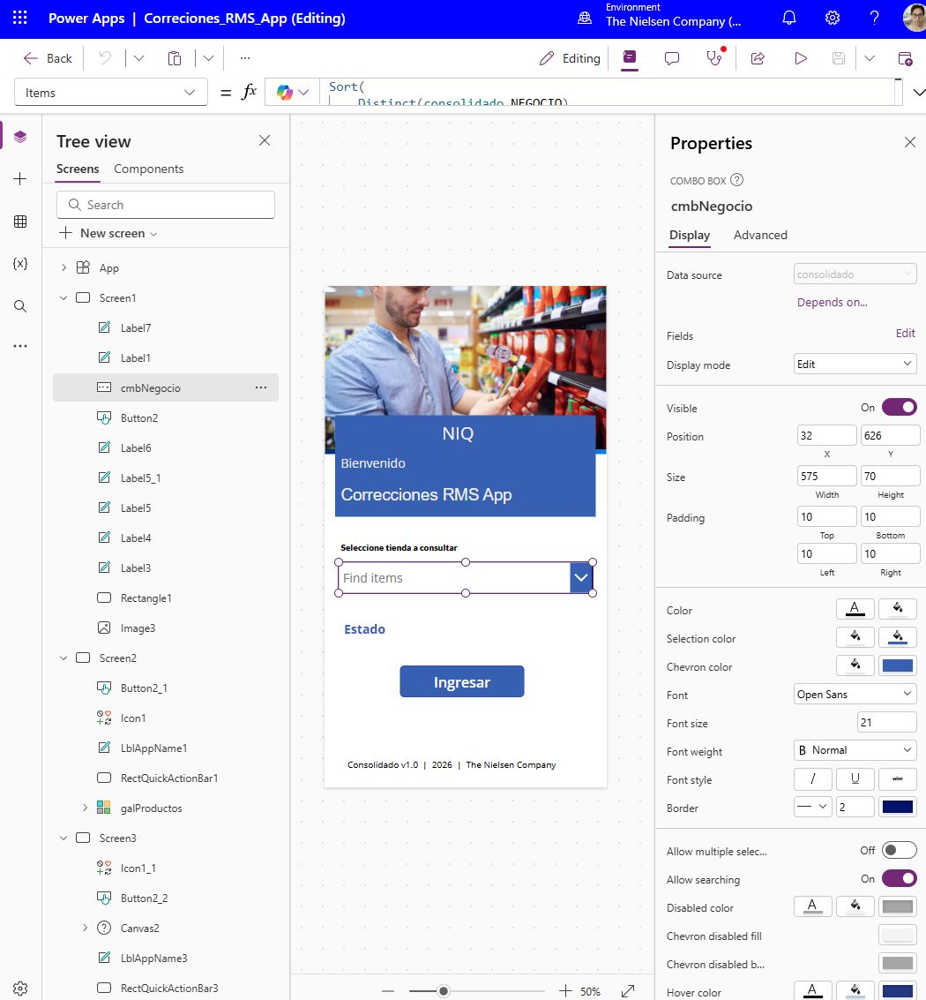
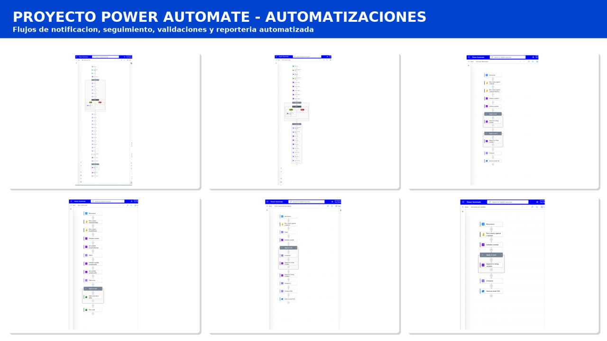

Consolidación
Integración de información proveniente de archivos y diferentes períodos para construir una estructura centralizada.
Excel
SharePoint
Power Query
Ecosistema de datos orientado al análisis, control de calidad, gestión de incidencias y automatización de procesos operacionales.
InStore Vision integra datos operacionales, captura de incidencias, automatización y Business Intelligence en un ecosistema conectado.
InStore Vision es una solución orientada al análisis, control y seguimiento de información operacional proveniente de procesos de auditoría en puntos de venta.
El proyecto trabaja con grandes volúmenes de información generados a partir de auditorías realizadas en terreno, donde se recopilan diferentes variables asociadas a la ejecución y calidad de los procesos.
La solución evolucionó desde procesos de consolidación y análisis hacia un ecosistema integrado que permite automatizar tareas, registrar incidencias, generar indicadores, identificar desviaciones y facilitar el control operacional.
Mi participación contempla el desarrollo y evolución de las soluciones de datos, automatización, control y documentación asociadas al proceso.
Convertir procesos con alta intervención manual en un sistema de información estructurado, controlable y escalable.
El proceso original requería trabajar con archivos periódicos provenientes de distintas fuentes, realizando tareas de consolidación, revisión y preparación antes de utilizar la información para análisis.
A medida que aumentaba el volumen de registros, mantener estas tareas manualmente implicaba una importante carga operacional y aumentaba el riesgo de inconsistencias.
También era necesario disponer de mecanismos para detectar desviaciones, realizar seguimiento de indicadores y registrar incidencias asociadas a los procesos operacionales.
El desafío consistió en conectar estas distintas necesidades dentro de una solución que permitiera automatizar, analizar y controlar la información.
La solución combina diferentes herramientas para cubrir captura, integración, automatización, análisis y control.
Integración de información proveniente de archivos y diferentes períodos para construir una estructura centralizada.
Limpieza, transformación y preparación de los datos para generar estructuras adecuadas para el análisis.
Desarrollo de una aplicación en Power Apps para registrar incidencias operacionales y alimentar la información utilizada posteriormente en el análisis.
InStore Vision incorpora 6 flujos de Power Automate utilizados para automatizar distintas etapas del proceso y reducir la intervención manual.
Construcción de un modelo de datos con múltiples tablas relacionadas para analizar indicadores, períodos, responsables y resultados.
Utilización de indicadores, alertas y visualizaciones para facilitar el seguimiento y detectar situaciones que requieren atención.
InStore Vision conecta las fuentes operacionales con la captura de incidencias, automatización, análisis y control.
Componentes visuales del ecosistema desarrollado.
Dashboards orientados al seguimiento de indicadores, análisis de resultados, identificación de desviaciones y control operacional.

Aplicación utilizada para registrar incidencias operacionales. La información capturada se integra posteriormente al ecosistema de datos para su seguimiento y análisis.

InStore Vision cuenta con 6 flujos de Power Automate destinados a conectar procesos, ejecutar validaciones, procesar información y automatizar tareas operacionales.

Las soluciones desarrolladas también se acompañan de documentación orientada a los usuarios finales.
Además del desarrollo técnico, genero la documentación necesaria para que los usuarios puedan utilizar las soluciones de forma correcta y autónoma.
Esto incluye la elaboración de guías de usuario, procedimientos e instrucciones de uso asociadas a las herramientas y procesos desarrollados.
La documentación permite facilitar la adopción de las soluciones, estandarizar procedimientos y entregar herramientas que puedan ser utilizadas y comprendidas por los equipos involucrados.
La información se estructura en un modelo integrado para permitir análisis por diferentes dimensiones y períodos.
El modelo integra múltiples estructuras de información para permitir una visión transversal del proceso.
Se utilizan relaciones entre tablas, transformaciones mediante Power Query y medidas DAX para construir indicadores orientados al seguimiento operacional.
La arquitectura permite analizar información por períodos, responsables, auditores, indicadores y otros atributos relevantes para el control.
El objetivo no es solamente visualizar información, sino convertirla en una herramienta de seguimiento.
Indicadores para monitorear el comportamiento operacional.
Identificación de desviaciones y situaciones que requieren seguimiento.
Registro de situaciones mediante Power Apps y seguimiento posterior dentro del ecosistema BI.
Información estructurada para facilitar la priorización y toma de decisiones.
Herramientas utilizadas para construir y mantener el ecosistema InStore Vision.
Business Intelligence, dashboards y visualización.
Transformación, limpieza y preparación de datos.
Medidas, indicadores y lógica analítica.
Automatización e integración de procesos.
Registro y digitalización de incidencias.
Gestión de información y fuentes de datos.
Consolidación, análisis y preparación de información.
Automatización de tareas de escritorio.
Evolución desde procesos manuales hacia una solución integrada de datos, automatización y control.
Automatización de tareas repetitivas que anteriormente requerían intervención manual.
Disponibilidad de indicadores, alertas e información estructurada para seguimiento.
Integración de diferentes fuentes dentro de modelos preparados para análisis.
Evolución hacia procesos capaces de trabajar con grandes volúmenes de información.
Este caso de estudio presenta la arquitectura, metodología y tecnologías utilizadas de forma general. Los datos, nombres de clientes, información comercial y elementos confidenciales han sido omitidos o generalizados.